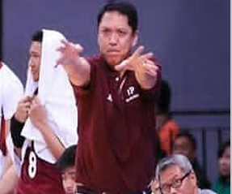
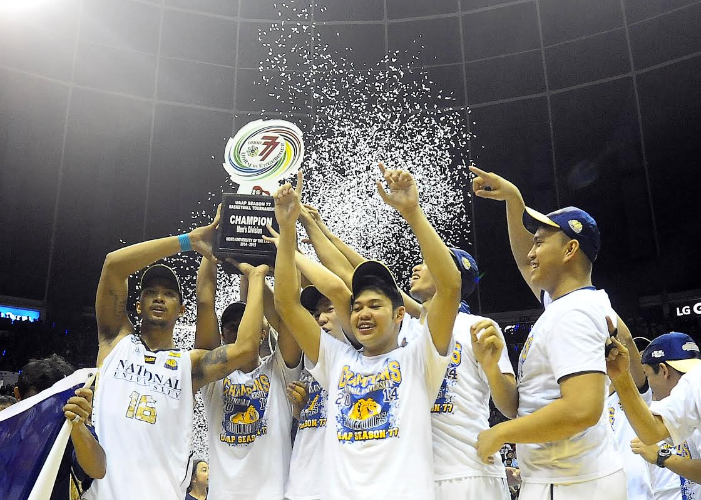
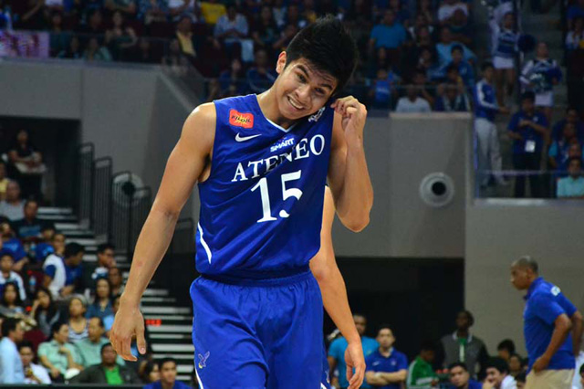
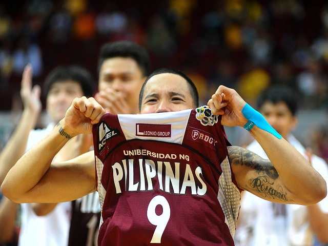

background
-
SCOREBOARD:
NU BULLDOGS 57 VS UE WARRIORS 55
DLSU ARCHERS 67 VS ADU FALCONS 48
UST TIGERS 73 VS UP MAROONS 57

UP Coach Madrid suspended for 2 games!
The University of the Philippines Fighting Maroons are still looking for their first victory of the 77th Season of the UAAP and their road just got tougher as head coach Rey Madrid was slapped a two-game suspension for questioning the credibility of a referee after their loss to the University of Santo Tomas Growling Tigers last Saturday.
VIEW MORE>

NU Bulldogs end six decades of futility
THE National University Bulldogs completed their amazing transformation from whipping boys into UAAP basketball champions on Wednesday afternoon by beating the Far Eastern University Tamaraws, 75-59, in sudden death before a record crowd at the Smart Araneta Coliseum.
VIEW MORE>

UAAP Season 77 Champ!
UAAP Season 77 may only be halfway done, but for National University it is already an unforgettable one as six of their teams have garnered gold medals in their respective sports. Headlining this list of champions is the NU Men's Basketball team that ended a 60-year title drought, after beating Far Eastern University in Game 3 of their Finals series last October 15, 2014. In order to celebrate this momentous achievement, the entire NU community held a huge party at the activity center inside the NU campus in Sampaloc, Manila last Thursday, October 23, 2014.
VIEW MORE>

Ravena lifts MVP award
Ateneo de Manila University star Kiefer Ravena was officially hailed the season's best on Wednesday, receiving the much covered men's MVP plum in the UAAP awards at the Araneta Coliseum. Ravena copped the league' top individual award by tallying 77.64 total statistical points to become the fifth MVP out of Ateneo, behind Jun Reyes (1987-1988), Rich Alvarez (2000-2001), Enrico Villanueva (2002), and Rabeh Al-Hussaini (2008). "The Phenom" led the season in scoring, averaging 21.2 points a game. He is also no.1 in assists with 5.6 dishes a contest.
VIEW MORE>

La Salle stays alive in Final Four
De La Salle University simply refused to die on Saturday, manhandling Far Eastern University (FEU) with authority as the defending champion Archers lived one more day in the Final Four of the 77thUAAP men's basketball tournament at the Mall of Asia Arena. Playing with a foot in the grave, the resurgent Archers chewed FEU's twice-to-beat advantage behind main man Jeron Teng to prevail, 94-73, and force a do-or-die match on Wednesday.
VIEW MORE>

Adamson scores breakthrough win vs UP
Rookie coach Kenneth Duremdes was unable to hide his elation after Adamson University scored its breakthrough win: a 67-63 squeaker over University of the Philippines in the 77th UAAP men's basketball tournament Tuesday at the Araneta Coliseum. Holding back tears, Duremdes visited the press room for the first time as the Soaring Falcons arrested a 17-game losing streak with a valiant conquest of the Fighting Maroons.
VIEW MORE>